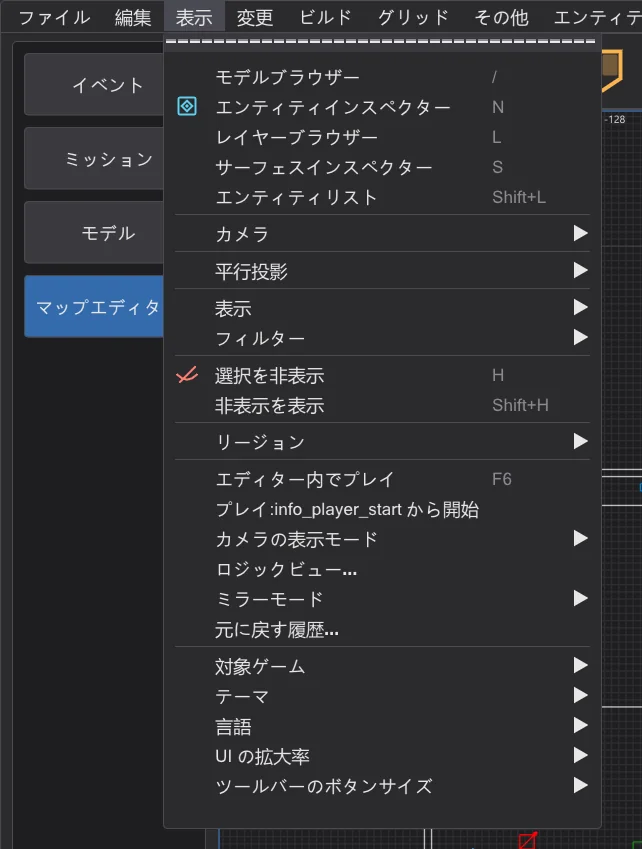
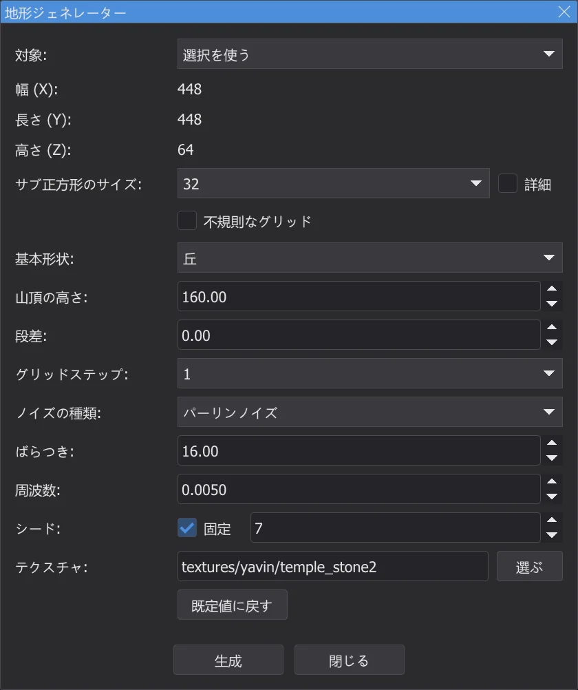
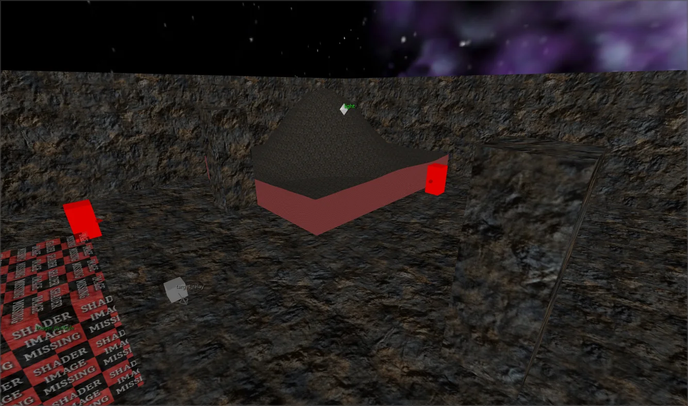
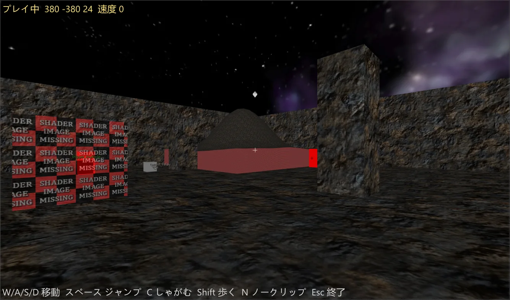
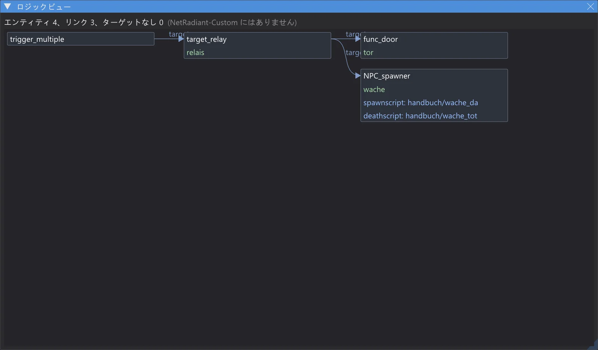
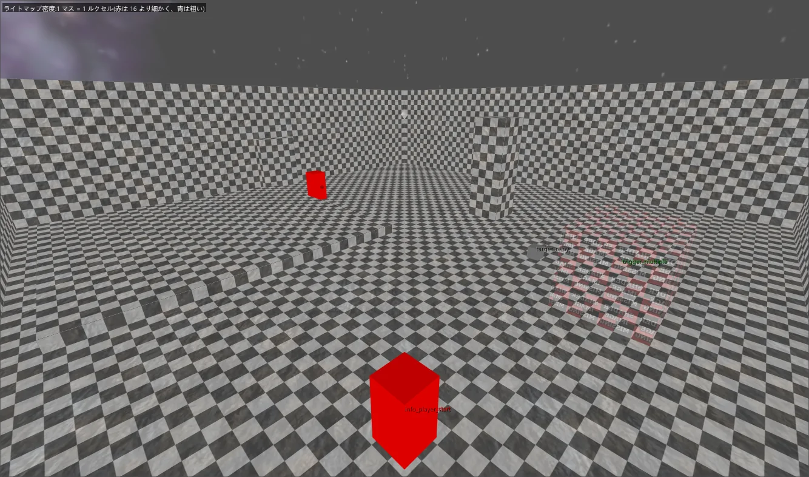
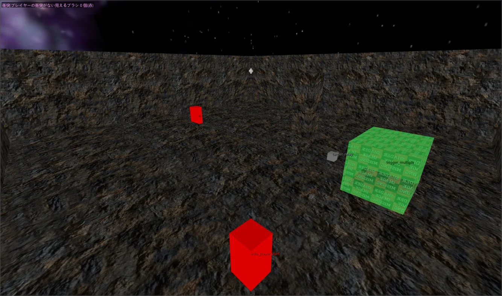
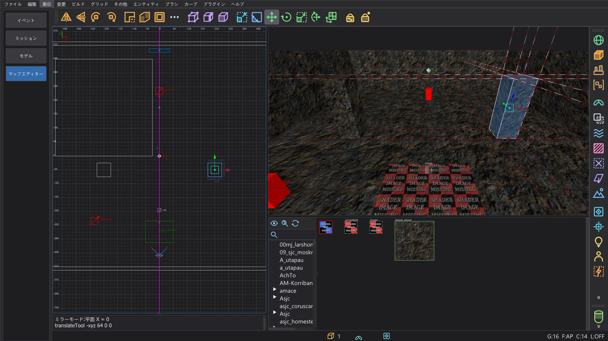
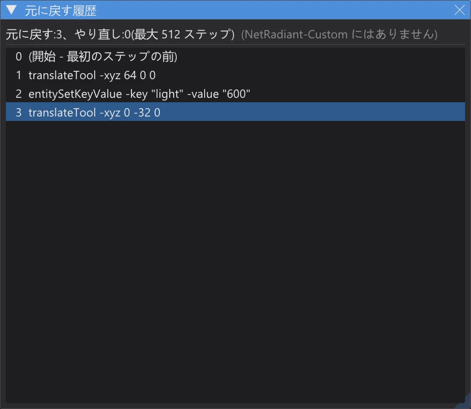

マップエディター:地形・プレイ・ロジック・ミラーなど
地形を生成し、コンパイルせずにマップの中を歩き、エンティティ同士のつながりを確認し、ライトマップ密度と衝突を調べ、ミラーモードで対称なマップを編集し、元に戻す履歴の中を移動します。
このページの機能は Terrain Generator を除いてすべて NetRadiant-Custom にはありません。どの機能にもその旨を示す専用のメニュー項目があり、すべてオフならエディターは NetRadiant-Custom と同じように動きます。新しい項目は 表示 の最後、プログラム設定の上にあります。

Terrain Generator(地形ジェネレーター)#
Plugins > TerrainGenerator > Generate Terrain は NetRadiant-Custom の現在のソース(master、リリース 20260114 より後)にあるプラグインを 1 行ずつ移植したものです。同じ値なら元のものと同じ高さ・三角形・テクスチャになります。ビューで作業している間もダイアログは開いたままです。




- 対象: 選択を使う は選択したブラシの大きさを使ってそれを置き換え、手動サイズ は原点の周りに地形を作ります。
- 基本形状:(丘、クレーター、尾根、斜面、火山、谷、トンネルなど)、ノイズの種類:、ばらつき:、周波数:、段差、グリッド間隔は元のものと同じです。生成 は元に戻す 1 ステップです。
- 独自の追加:シード: 固定 は乱数を固定値から始めます。同じ値なら同じ地形がもう一度できます。オフ(既定)では NetRadiant-Custom と同じく乱数の列が続きます。
自由な分割ウィンドウ#
Preferences > Interface > Layout > 分割ウィンドウを自由に割り当てる(レイアウト Split):4 つのウィンドウの角に小さなメニューが付き、カメラ・XY・XZ・YZ を選べます。同じビューを 2 つのウィンドウに出すこともできます。Ctrl+Tab でアクティブな 2D ウィンドウの種類が変わり、仕切りの位置は保たれます。オフ(既定)では NetRadiant-Custom と同じく 4 つのウィンドウは固定です。
エディター内でプレイ#

- コンパイル不要:衝突はブラシとパッチから直接作られ、その内容は q3map2 が与えるもの(ゲームの surfaceparm、clip ブラシ、nonsolid、水など)と同じです。歩く・跳ぶ・階段・坂はゲームの移動コード(Pmove)の移植を使います。プログラムのプレビューと同じで、JKA と Movie Duels、または Jedi Outcast のルールです。
- W/A/S/D で移動、スペースでジャンプ、C か Ctrl でしゃがみ、Shift で歩き、マウスで見回し、N でノークリップ切り替え、Esc で終了してカメラを元の位置に戻します。
- プレイ:info_player_start から開始:オンなら最初の info_player_start(その origin + 9 と angle。ゲームと同じ選び方)から、オフならカメラの位置から始まります。
ロジックビュー#

- ロジックビュー はエンティティ間のつながりをすべて左から右へのグラフとして描きます:target、target2 … target5、NPC_target、ドアのターゲット、エンティティ定義のすべての *target* キー。スクリプトキー(spawnscript、usescript、deathscript など)はエンティティの枠の中に並びます。
- 枠をクリックするとそのエンティティが選択され、2D ビューとカメラがその位置に合わせられます。スクリプトの行をダブルクリックすると ICARUS スクリプトがスクリプトエディターで開きます。マウスホイールでズーム、右または中ボタンで移動します。
- 対応する targetname のないターゲットは赤い枠で表示されます。ゲームではどこにもつながらないリンクです。
カメラの表示モード#




- ライトマップ密度:面ごとにルクセルの大きさの市松模様を表示します。計算は q3map2 と同じです(q3map_lightmapSampleSize、エンティティの _samplesize と _lightmapscale、-samplesize。面が 128 ルクセルに収まるまで拡大)。16 より細かいと赤み、粗いと青み、ライトマップのない面は灰色です。
- 衝突:q3map2 が与える内容でブラシを色分けします。playerclip はマゼンタ、monsterclip はオレンジ、botclip は黄、shotclip はシアン、nodrop は暗い赤、ほかに水・スライム・溶岩・霧・トリガー。プレイヤーが通り抜けられる見える壁(プレイヤー衝突なし)は明るい赤になります。
- 可視性 (PVS) と 三角形の負荷 にはマップの隣にあるコンパイル済みの .bsp(VIS 付き)が必要です。前者はカメラのクラスターからエンジンが描くものを緑で、後者は各場所から描かれる三角形の数をヒートマップで示します。数値はカメラの左上に出ます。
ミラーモード#

- ミラーモード:オフ、ミラー平面 X、ミラー平面 Y、ミラー平面 Z。平面は原点を通るか、選択の中心を通る平面(グリッドに合わせる) で選択のグリッド上の中心を通ります。2D ビューにはマゼンタの線で表示されます。
- 選択への変更はすべて同じ元に戻すステップの中で対のオブジェクトにも書き込まれ、ドラッグ中もリアルタイムです。ブラシとパッチは 1 つずつ、ポイントエンティティとグループは全体で扱います。origin・angle・angles はミラーされ、テクスチャは Flip と同じ扱いです(Texture Lock は設定どおり)。
- 正確な鏡像がすでにあればそれが対になり、なければ最初の変更でミラーしたコピーが作られます。削除すると両方が消え、元に戻すと両方が正確に戻ります。平面上で対称なオブジェクトには対はできません。
元に戻す履歴#

元に戻す履歴 は元に戻すステップをすべて(古い順に)並べ、その下にやり直しのステップを灰色で表示します。クリックすると必要な回数だけ元に戻す/やり直しを行ってそのステップの後の状態に移ります。Ctrl+Z と Ctrl+Y と同じく、それぞれコンソールに 1 行出ます。さかのぼれる範囲は元に戻すキューと同じです(Preferences > Undo Queue Size、既定 512)。
すべてのモデルフォルダーからの misc_model#
ジオメトリから misc_model を復元(エディターデータを残す)は、マップのシェーダーのフォルダーだけでなく、ゲームのすべてのモデルフォルダーからモデルを探すようになりました。モデルインデックス(モデルとメッシュごとの頂点数・三角形の集合・シェーダー)は設定フォルダーに karte_modellindex_<…>.txt として保存されます。最初の 1 回と、新しい・変更された .pk3 があるときは、bhed_q3map2 が足りないモデルを一度読み込みます(大きなインストールで約 30 秒)。その後は、メッシュが .bsp の三角形の面に合うモデルか、シェーダーを .bsp が使っているモデルだけを読み込みます。コンソールにインデックスと候補が表示されます。
| マップ | 以前 | 現在 |
|---|---|---|
| t2_trip | 0 | 13 |
| yavin1 | 18 | 32 |
| hoth2 | 5 | 32 |
| kor1 | 52 | 52 |
| jeditemple_garden(ソースあり) | 265 / 265 | 265 / 265 |
GPU による影のテスト(オフ)#
bhed_q3map2 には -light 用のコマンドラインスイッチ -bhedgpu があります。「ルクセルからライトへの光線が何かに当たるか」のテストをグラフィックカード(Direct3D 11)で行い、ライトの計算自体は CPU のままです。結果はなしの場合とバイト単位で同じで、5 つのマップと ctest q3map2_gpu で確認しています。測定したコンピューター(32 スレッド、RTX 4070 Laptop)では速くならなかった(mp/duel1 2.3 秒 → 3.2 秒、kejim_post 10.0 秒 → 11.3 秒)ため、Build メニューには入れず、オフのままです。